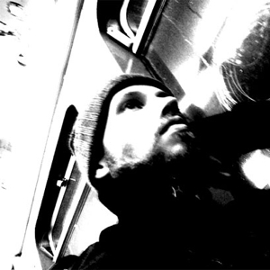

Tveit, Anders

Current ongoing projects and involvment is:
- Pd conception ( A German/Norwegian Contemporary music trio.)
- Gunia/Evensen/Tveit Trio ( Electro/acoustic/ambient trio.)
- Kaldestad/Tveit ( Electronic/Acoustic free Impro duo.)
- The Köln-Oslo Protokol ( A Interdisiplinary collective.)
- Tveit/Tiqiao/Gunia ( Playing the music of Cornelius Cardew.)
- Alpine Those Myriads? ( Norwegian Avant-Garde rock act.)
As well as freelancing activity and ad hoc constellations from time to time with different musicians both in Norway and Europe.
Collaborations and performances past & present with :
Terje Evensen, Alex Gunia, Jon Halvor Bjørnseth, Ingvo Clauder, Johannes Grüttler, Michael Kiedaisch, Matthias Mainz, Hannes Hoezl, Joker Nies, Ulrik Ibsen Thorsrud, Joana Aderi, Brage Rognlien, Johns Epic, Li TieQiao, Gyrid Nordal Kaldestad,
Alexander Refsum Jensenius, Are Lothe Kolbeinsen, BARK. and more..
Anders Tveit resides in Oslo, Norway.
- 1
- 2